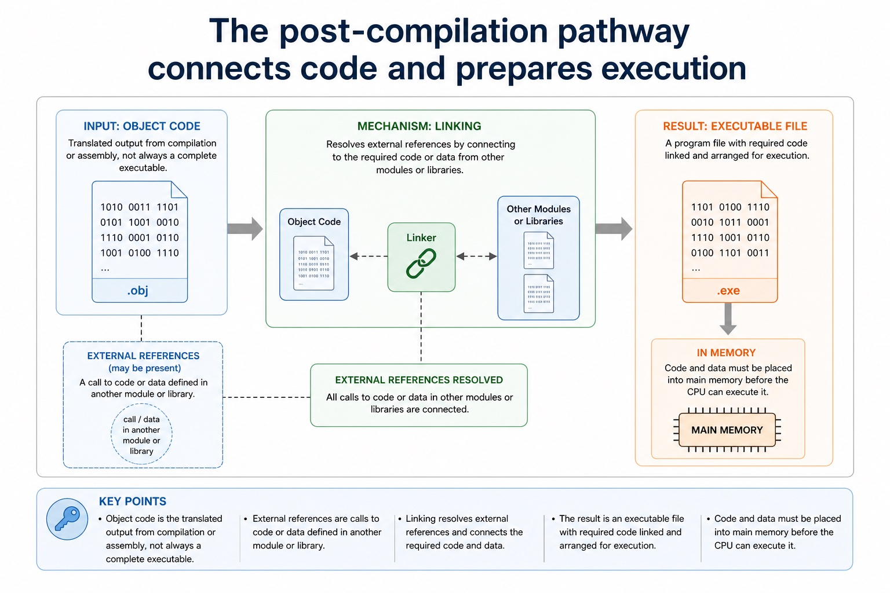
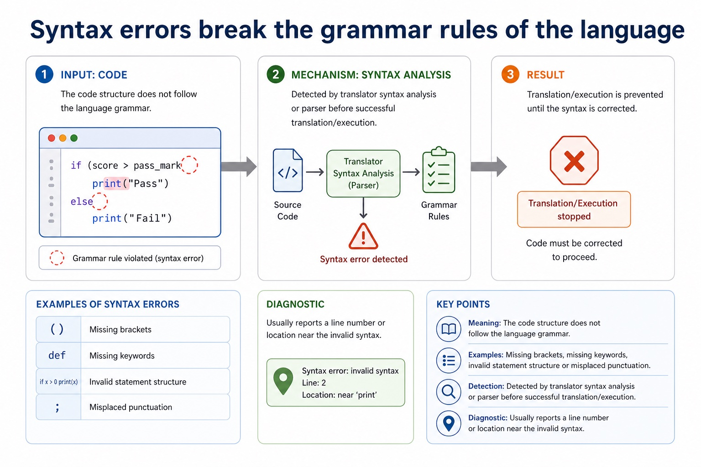
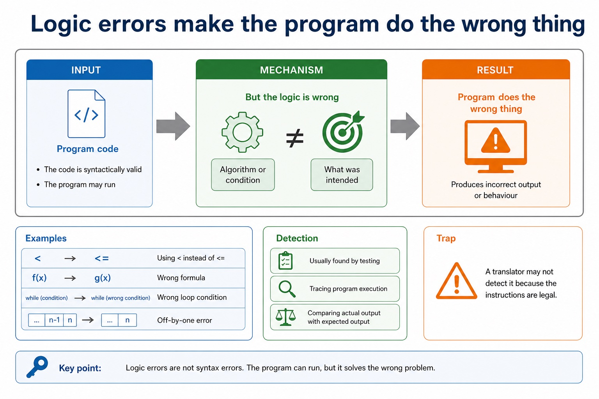

Lesson 059 | 45 minutes | Paper 1 Section 5 | System software
Not all errors are equal. Some stop translation, some crash at run time, and some smile while giving the wrong answer.
This lesson classifies syntax, logic and runtime errors, then connects them to compiler and interpreter diagnostics.
The goal is to diagnose the error from evidence: when it happens, what the translator reports, and whether the program still runs.
Classifysyntax, logic and runtime errors from short scenarios
Explainhow compiler and interpreter diagnostics help programmers
Justifywhy an error belongs to a category using evidence, not vibes
Syntax: grammar brokenLogic: runs, wrong resultRuntime: fails while runningDiagnostics: messages to locate/fix
The compiler can complain loudly. The worst logic error just nods and lies.
Why this matters
Exam answers need a category plus a reason. "There is an error" is not a diagnosis.
Common trap
Do not call every incorrect answer a runtime error. If the program completes but calculates wrongly, it is usually a logic error.
Warm-up hook
A program calculates a bill, runs without crashing, but charges everyone double. What type of error is most likely?
Click the best answer. The program is confident, fast, and absolutely wrong.
Choose one. The timing and symptom of the error matter.
Knowledge point 1
Error classification depends on when and how the fault appears
Before executionSyntax and translation errors may stop a program from being translated or run.During executionRuntime errors occur while the program is running.After executionLogic errors may allow completion but produce an incorrect result.DiagnosticsError messages and locations help the programmer identify and correct faults.
Error classification depends on when and how the fault appears

Error classification depends on when and how the fault appears: source-grounded visual explanation.
Lesson fact: Before execution Syntax and translation errors may stop a program from being translated or run.
Lesson fact: During execution Runtime errors occur while the program is running.
Lesson fact: After execution Logic errors may allow completion but produce an incorrect result.
Lesson fact: Diagnostics Error messages and locations help the programmer identify and correct faults.
Knowledge point 2
Syntax errors break the grammar rules of the language
MeaningThe code structure does not follow the language grammar.ExamplesMissing brackets, missing keywords, invalid statement structure or misplaced punctuation.DetectionDetected by translator syntax analysis or parser before successful translation/execution.DiagnosticUsually reports a line number or location near the invalid syntax.
Syntax errors break the grammar rules of the language

Syntax errors break the grammar rules of the language: source-grounded visual explanation.
Lesson fact: Meaning The code structure does not follow the language grammar.
Lesson fact: Detection Detected by translator syntax analysis or parser before successful translation/execution.
Lesson fact: Diagnostic Usually reports a line number or location near the invalid syntax.
Knowledge point 3
Logic errors make the program do the wrong thing
MeaningThe code is syntactically valid and may run, but the algorithm or condition is wrong.ExamplesUsing < instead of <=, wrong formula, wrong loop condition or off-by-one error.DetectionUsually found by testing, tracing or comparing actual output with expected output.TrapA translator may not detect it because the instructions are legal.
Logic errors make the program do the wrong thing

Logic errors make the program do the wrong thing: source-grounded visual explanation.
Lesson fact: Meaning The code is syntactically valid and may run, but the algorithm or condition is wrong.
Lesson fact: Examples Using < instead of <= , wrong formula, wrong loop condition or off-by-one error.
Lesson fact: Detection Usually found by testing, tracing or comparing actual output with expected output.
Lesson fact: Trap A translator may not detect it because the instructions are legal.
Knowledge point 4
Runtime errors occur while the program is executing
MeaningThe program starts running but fails because of an event or invalid operation during execution.ExamplesDivision by zero, file not found, array index out of range or insufficient memory.ResultThe program may crash, halt, raise an exception or display an error message.HandlingRobust programs may use validation and exception handling to reduce runtime failure.
Runtime errors occur while the program is executing
Runtime errors occur while the program is executing: source-grounded visual explanation.
Lesson fact: Meaning The program starts running but fails because of an event or invalid operation during execution.
Lesson fact: Examples Division by zero, file not found, array index out of range or insufficient memory.
Lesson fact: Result The program may crash, halt, raise an exception or display an error message.
Lesson fact: Handling Robust programs may use validation and exception handling to reduce runtime failure.
Knowledge point 5
Translation diagnostics help locate and correct errors
CompilerMay report a list of errors after attempting translation.InterpreterMay stop at or near the statement being translated/executed.Useful detailsError type, line number, token, expected symbol or explanation of the fault.LimitationThe reported line may be near the cause, not always the exact cause.
Translation diagnostics help locate and correct errors
Translation diagnostics help locate and correct errors: source-grounded visual explanation.
Lesson fact: Compiler May report a list of errors after attempting translation.
Lesson fact: Interpreter May stop at or near the statement being translated/executed.
Lesson fact: Useful details Error type, line number, token, expected symbol or explanation of the fault.
Lesson fact: Limitation The reported line may be near the cause, not always the exact cause.
Knowledge point 6
Compare error types by evidence
Error type
When noticed
Evidence
Example
Syntax
Translation/parsing time
Invalid grammar or structure.
Missing bracket or malformed IF statement.
Logic
Testing/output checking
Program runs but result is incorrect.
Average calculated with wrong divisor.
Runtime
While executing
Program fails due to operation or resource problem.
Division by zero or file not found.
Compare error types by evidence
Compare error types by evidence: source-grounded visual explanation.
Lesson fact: Error type
Lesson fact: When noticed
Lesson fact: Evidence
Lesson fact: Translation/parsing time
Lesson fact: Invalid grammar or structure.
Lesson fact: Missing bracket or malformed IF statement.
Lesson fact: Testing/output checking
Lesson fact: Program runs but result is incorrect.
Lesson fact: Average calculated with wrong divisor.
Lesson fact: While executing
Lesson fact: Program fails due to operation or resource problem.
Lesson fact: Division by zero or file not found.
Interactive tool
Error diagnosis tool
Select a symptom and classify the most likely error type.
Worked examples
Diagnose from code behaviour
Practice
Instant-check questions
Type a short answer, then check. Reveal the expected wording only after trying.
Mistake debugging
Fix the almost-right answers
Exam-style questions
Answer first, then reveal the CIE-style mark scheme
These are original Cambridge-style questions. The mark schemes include strict wording notes and follow-through guidance.
Summary
Error diagnosis memory map
SyntaxGrammar invalid; translator can detect before successful running.
LogicProgram runs but algorithm gives wrong output.
RuntimeProgram fails during execution.
CompilerMay report a list of errors after translation attempt.
InterpreterMay stop at the statement being executed.
Exam ruleClassify, justify with evidence, then give a relevant example.
Homework
Clear output, not vague revision
Task 1: Error evidence tableCreate a table for syntax, logic and runtime errors: when noticed, symptom, example and how to detect it.Task 2: Classification setWrite five short code-behaviour scenarios and classify each error type with one-sentence evidence.Task 3: 6-mark answerExplain how translation diagnostics help programmers find errors, and why logic errors may still require testing.